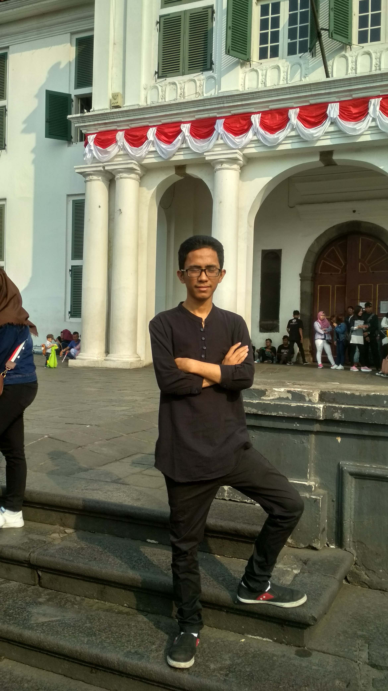

Fikri Harya Sandi
Jakarta, Indonesia
Fikri Harya Sandi or better known as Sandi or Fikri is a website maker who was born in Jakarta. Currently, he is trying to become a professional developer in 2021. He is studying at Mercubuana University and is currently majoring in Information Systems.
To improve his skills in creating a website, he studied at the Udacoding institute. He has the vision and aspirations so that he can create a good and useful website for everyone. His favorite hobby is learning, especially learning coding. His favorite foods are Fried Potatoes and Fried Tempe